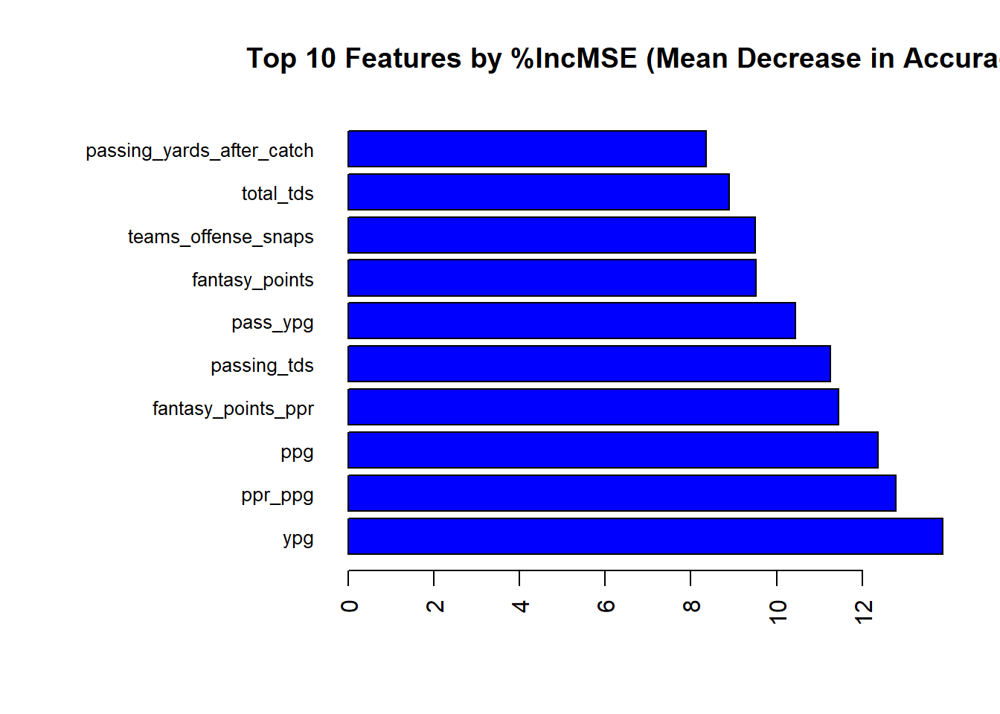
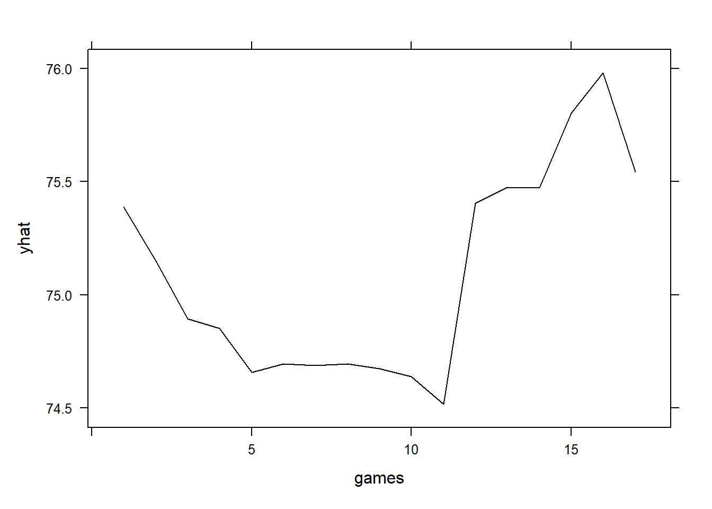
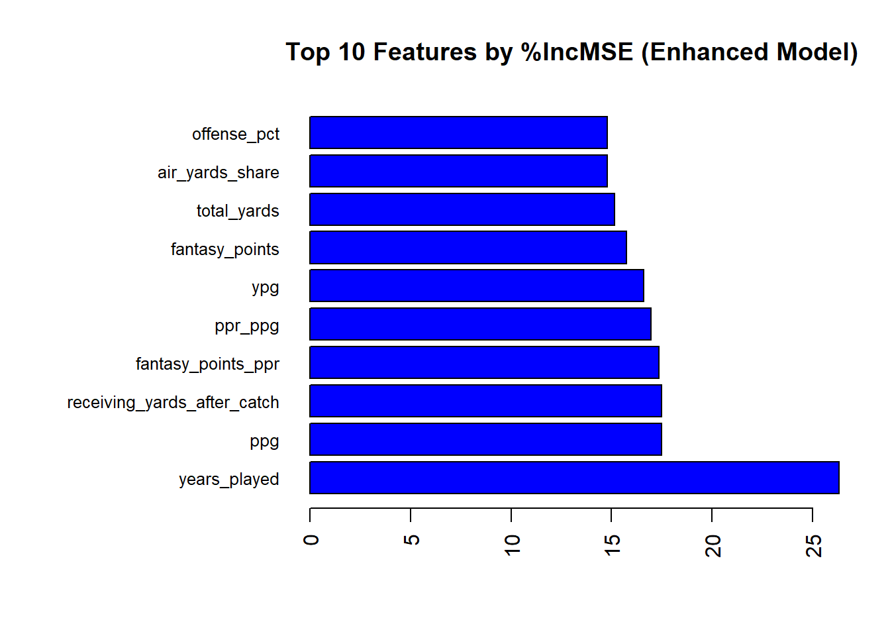

Chapter 16 NFL
16.1 WBs
## Rows: 5453 Columns: 76
## ── Column specification ──────────
## Delimiter: ","
## chr (5): name, height_ft, position, team, season_type
## dbl (71): id, height_cm, season, completions, attempts, passing_yards, passi...
##
## ℹ Use `spec()` to retrieve the full column specification for this data.
## ℹ Specify the column types or set `show_col_types = FALSE` to quiet this message.names(data)[names(data) == "height_cm"] <- "height_in"
data <- data[, !names(data) %in% c("height_ft")]# Split the dataset by position
data_split <- split(data, data$position)
# Access the WR data
wr_data <- data_split$WR# Identify zero-variance columns
zero_var_cols <- nearZeroVar(wr_data)
# Check and remove zero-variance columns, excluding 'position'
zero_var_colnames <- colnames(wr_data)[zero_var_cols]
cols_to_keep <- names(wr_data)[!(names(wr_data) %in% zero_var_colnames) | names(wr_data) == "position"]
wr_data <- wr_data[, cols_to_keep]# Filter the data for the 2023 season to save it before we kill it
wr_2023 <- subset(wr_data, season == 2023)# Create new columns for the next season's fantasy points
wr_data$next_fantasy_points <- ave(wr_data$fantasy_points, wr_data$name, FUN = function(x) c(x[-1], NA))
wr_data$next_fantasy_points_ppr <- ave(wr_data$fantasy_points_ppr, wr_data$name, FUN = function(x) c(x[-1], NA))
# View the first few rows of the updated data
head(data)## # A tibble: 6 × 75
## id name height_in position team season season_type completions attempts
## <dbl> <chr> <dbl> <chr> <chr> <dbl> <chr> <dbl> <dbl>
## 1 1 A.J. B… 73 WR TEN 2019 REG 0 0
## 2 1 A.J. B… 72 WR TEN 2020 REG 0 0
## 3 1 A.J. B… 73 WR TEN 2021 REG 0 2
## 4 1 A.J. B… 73 WR PHI 2022 REG 0 0
## 5 1 A.J. B… 73 WR PHI 2023 REG 0 0
## 6 2 A.J. D… 77 TE DEN 2016 REG 0 0
## # ℹ 66 more variables: passing_yards <dbl>, passing_tds <dbl>,
## # interceptions <dbl>, sacks <dbl>, sack_yards <dbl>, sack_fumbles <dbl>,
## # sack_fumbles_lost <dbl>, passing_air_yards <dbl>,
## # passing_yards_after_catch <dbl>, passing_first_downs <dbl>,
## # passing_2pt_conversions <dbl>, carries <dbl>, rushing_yards <dbl>,
## # rushing_tds <dbl>, rushing_fumbles <dbl>, rushing_fumbles_lost <dbl>,
## # rushing_first_downs <dbl>, rushing_2pt_conversions <dbl>, …## id name
## 0 0
## height_in position
## 0 0
## team season
## 0 0
## attempts carries
## 0 0
## rushing_first_downs receptions
## 0 0
## targets receiving_yards
## 0 0
## receiving_tds receiving_fumbles
## 0 0
## receiving_fumbles_lost receiving_air_yards
## 0 0
## receiving_yards_after_catch receiving_first_downs
## 0 0
## receiving_2pt_conversions target_share
## 0 0
## air_yards_share fantasy_points
## 0 0
## fantasy_points_ppr total_yards
## 0 0
## games offense_snaps
## 0 0
## teams_offense_snaps ypc
## 0 0
## ypr touches
## 0 0
## rec_td_percentage total_tds
## 0 0
## td_percentage offense_pct
## 0 77
## rush_ypg rec_ypg
## 0 0
## ppg ppr_ppg
## 0 0
## yps ypg
## 4 0
## rookie_season round
## 0 0
## forty bench
## 0 0
## vertical years_played
## 0 0
## fp_ps ppr_fp_ps
## 2 2
## next_fantasy_points next_fantasy_points_ppr
## 675 675# For now, remove all rows with NAs
wr_data <- na.omit(wr_data)
# Drop the next_fantasy_points_ppr column
wr_data <- wr_data[, !names(wr_data) %in% "next_fantasy_points_ppr"]# Build Random Forest model
wrrf_model <- randomForest(next_fantasy_points ~ ., data = wr_data, ntree = 500, importance = TRUE)# Create a simplified dataset for linear regression
lm_data <- wr_data[, !names(wr_data) %in% c("name", "id", "position")]
# Initialize a vector to store RMSPE values for each run
rmspe <- c()
for(i in 1:10) {
# Resample the dataset with replacement
ind <- unique(sample(nrow(lm_data), nrow(lm_data), replace = TRUE))
train <- lm_data[ind, ]
test <- lm_data[-ind, ]
# Build Linear Regression model
lm_model <- lm(next_fantasy_points ~ ., data = train)
# Predict on the test data
yhat <- predict(lm_model, newdata = test)
# Calculate RMSPE
rmspe[i] <- sqrt(mean((test$next_fantasy_points - yhat)^2))
}## Warning in predict.lm(lm_model, newdata = test): prediction from rank-deficient
## fit; attr(*, "non-estim") has doubtful cases
## Warning in predict.lm(lm_model, newdata = test): prediction from rank-deficient
## fit; attr(*, "non-estim") has doubtful cases
## Warning in predict.lm(lm_model, newdata = test): prediction from rank-deficient
## fit; attr(*, "non-estim") has doubtful cases
## Warning in predict.lm(lm_model, newdata = test): prediction from rank-deficient
## fit; attr(*, "non-estim") has doubtful cases
## Warning in predict.lm(lm_model, newdata = test): prediction from rank-deficient
## fit; attr(*, "non-estim") has doubtful cases
## Warning in predict.lm(lm_model, newdata = test): prediction from rank-deficient
## fit; attr(*, "non-estim") has doubtful cases
## Warning in predict.lm(lm_model, newdata = test): prediction from rank-deficient
## fit; attr(*, "non-estim") has doubtful cases
## Warning in predict.lm(lm_model, newdata = test): prediction from rank-deficient
## fit; attr(*, "non-estim") has doubtful cases
## Warning in predict.lm(lm_model, newdata = test): prediction from rank-deficient
## fit; attr(*, "non-estim") has doubtful cases
## Warning in predict.lm(lm_model, newdata = test): prediction from rank-deficient
## fit; attr(*, "non-estim") has doubtful cases# Calculate the mean RMSPE over the 10 runs
mean_rmspe <- mean(rmspe)
print(paste("Mean RMSPE over 10 runs:", mean_rmspe))## [1] "Mean RMSPE over 10 runs: 40.3900949556639"## [1] 41.51607 38.92039 40.43129 40.48614 39.86521 40.58027 38.78137 41.11945
## [9] 42.87032 39.33045# Evaluate feature importance
importance_values <- importance(wrrf_model)
# Sort and extract the top 10 features by %IncMSE and IncNodePurity
top10_mse <- importance_values[order(importance_values[, "%IncMSE"], decreasing = TRUE), ][1:10, ]
top10_purity <- importance_values[order(importance_values[, "IncNodePurity"], decreasing = TRUE), ][1:10, ]
# Visualize top 10 features by %IncMSE
par(mar = c(5, 12, 4, 2)) # Increase margins for labels
barplot(top10_mse[, "%IncMSE"], names.arg = rownames(top10_mse),
main = "Top 10 Features by %IncMSE (Mean Decrease in Accuracy)",
las = 2, col = "blue", horiz = TRUE, cex.names = 0.8)
# Visualize top 10 features by IncNodePurity
barplot(top10_purity[, "IncNodePurity"], names.arg = rownames(top10_purity),
main = "Top 10 Features by IncNodePurity (Mean Decrease in Gini)",
las = 2, col = "red", horiz = TRUE, cex.names = 0.8)
oob_mse <- wrrf_model$mse[wrrf_model$ntree]
oobrmse <- sqrt(oob_mse)
# Print the OOB MSE
print(paste("OOB rMSE:", oobrmse))## [1] "OOB rMSE: 40.8993809346341"# Extract OOB predictions
oob_predictions <- wrrf_model$predicted
# Calculate the absolute errors
absolute_errors <- abs(oob_predictions - wrrf_model$y)
# Calculate the Mean Absolute Error (MAE)
oob_mae <- mean(absolute_errors)
# Print the OOB MAE
print(paste("OOB MAE:", oob_mae))## [1] "OOB MAE: 31.0312370753633"# Predict 2024 fantasy points for 2023 WRs
predicted_2024_fantasy_points <- predict(wrrf_model, newdata = wr_2023)
# Create a data frame with the names and the predicted 2024 fantasy points
results_wr <- data.frame(name = wr_2023$name, predicted_2024_fantasy_points = predicted_2024_fantasy_points)
print(results_wr)## name predicted_2024_fantasy_points
## 1 A.J. Brown 157.17480
## 2 A.T. Perry 46.98369
## 3 Adam Thielen 124.63056
## 4 Alec Pierce 67.58696
## 5 Alex Erickson 37.06521
## 6 Allen Lazard 49.83097
## 7 Allen Robinson 47.93763
## 8 Amari Cooper 135.74772
## 9 Amari Rodgers 25.25656
## 10 Amon-Ra St. Brown 190.62602
## 11 Andrei Iosivas 37.23415
## 12 Antoine Green 25.17406
## 13 Austin Trammell 18.80340
## 14 Ben Skowronek 19.88537
## 15 Bo Melton 59.66029
## 16 Brandin Cooks 107.68374
## 17 Brandon Aiyuk 146.37277
## 18 Brandon Johnson 44.39556
## 19 Brandon Powell 42.02138
## 20 Braxton Berrios 39.60880
## 21 Britain Covey 17.08505
## 22 Byron Pringle 26.51074
## 23 Calvin Austin 39.43761
## 24 Calvin Ridley 130.29700
## 25 Cedric Tillman 44.89559
## 26 CeeDee Lamb 187.75591
## 27 Charlie Jones 24.83876
## 28 Chase Claypool 12.38027
## 29 Chris Conley 52.30433
## 30 Chris Godwin 115.05250
## 31 Chris Moore 42.57187
## 32 Chris Olave 140.80677
## 33 Christian Kirk 97.79042
## 34 Christian Watson 78.28672
## 35 Cody Thompson 14.12964
## 36 Collin Johnson 10.41027
## 37 Colton Dowell 17.19781
## 38 Cooper Kupp 108.32921
## 39 Courtland Sutton 112.63547
## 40 Curtis Samuel 73.59254
## 41 D'Wayne Eskridge 16.71575
## 42 D.J. Chark NA
## 43 D.J. Montgomery 22.14999
## 44 D.J. Moore 155.89027
## 45 Darius Slayton 68.79059
## 46 Darnell Mooney 55.90383
## 47 Davante Adams 134.72572
## 48 David Bell 35.11340
## 49 David Moore 18.23128
## 50 DeAndre Carter 18.77411
## 51 DeAndre Hopkins 123.21165
## 52 Deebo Samuel 127.33945
## 53 Demarcus Robinson 54.56798
## 54 Demario Douglas 73.42642
## 55 Deonte Harty 24.25080
## 56 Derius Davis 35.31692
## 57 DeVante Parker 40.49505
## 58 Deven Thompkins 28.03221
## 59 Devin Duvernay 18.41180
## 60 DeVonta Smith 134.73927
## 61 Diontae Johnson 107.77734
## 62 DK Metcalf NA
## 63 Donovan Peoples-Jones 13.95773
## 64 Dontayvion Wicks 69.02956
## 65 Drake London 94.35400
## 66 Dyami Brown 34.43046
## 67 Elijah Cooks 16.03892
## 68 Elijah Moore 77.19134
## 69 Equanimeous St. Brown 12.21726
## 70 Erik Ezukanma 21.20262
## 71 Gabe Davis NA
## 72 Garrett Wilson 118.87253
## 73 George Pickens 119.96120
## 74 Greg Dortch 44.71445
## 75 Gunner Olszewski 20.97760
## 76 Hunter Renfrow 40.33806
## 77 Ihmir Smith-Marsette 26.83299
## 78 Irvin Charles 17.86954
## 79 Isaiah Hodgins 42.12548
## 80 Isaiah McKenzie 25.54656
## 81 Ja'Marr Chase 137.89821
## 82 Jahan Dotson 56.38782
## 83 Jake Bobo 37.67511
## 84 Jakobi Meyers 113.42291
## 85 Jalen Brooks 23.39124
## 86 Jalen Guyton 21.51121
## 87 Jalen Nailor 19.39478
## 88 Jalen Reagor 25.13487
## 89 Jalen Tolbert 42.11227
## 90 Jalin Hyatt 61.83907
## 91 Jamal Agnew 32.79430
## 92 James Proche 30.55856
## 93 Jameson Williams 49.73451
## 94 Jamison Crowder 29.39799
## 95 Jason Brownlee 27.34987
## 96 Jauan Jennings 36.10466
## 97 Jaxon Smith-Njigba 82.61150
## 98 Jayden Reed 129.16471
## 99 Jaylen Waddle 133.38376
## 100 Jerry Jeudy 77.73054
## 101 Jonathan Mingo 77.55108
## 102 Jordan Addison 122.85956
## 103 Josh Downs 85.10446
## 104 Josh Palmer 77.84407
## 105 Josh Reynolds 54.59260
## 106 JuJu Smith-Schuster 39.12024
## 107 Julio Jones 23.73418
## 108 Justin Jefferson 137.10834
## 109 Justin Watson 60.80272
## 110 Justyn Ross 16.38659
## 111 Juwann Winfree 14.04169
## 112 K.J. Osborn 47.56511
## 113 Kadarius Toney 42.00206
## 114 Kalif Raymond 50.26786
## 115 Kayshon Boutte 21.53693
## 116 Keelan Doss 19.73776
## 117 Keenan Allen 150.16159
## 118 Keith Kirkwood 13.79941
## 119 Kendrick Bourne 69.14235
## 120 KhaDarel Hodge 34.60650
## 121 Khalil Shakir 65.89405
## 122 Kwamie Lassiter NA
## 123 Kyle Philips 27.48208
## 124 Laquon Treadwell 21.12392
## 125 Laviska Shenault NA
## 126 Lil'Jordan Humphrey 35.20077
## 127 Lynn Bowden NA
## 128 Mack Hollins 32.42796
## 129 Malik Heath 31.37605
## 130 Malik Taylor 11.55329
## 131 Marquez Valdes-Scantling 48.59948
## 132 Marquise Brown 75.42577
## 133 Marquise Goodwin 25.62864
## 134 Marvin Jones 14.59955
## 135 Marvin Mims 58.28685
## 136 Mason Kinsey 16.04117
## 137 Mecole Hardman 28.05350
## 138 Michael Gallup 34.03682
## 139 Michael Pittman NA
## 140 Michael Thomas 49.86298
## 141 Michael Wilson 74.66154
## 142 Mike Evans 135.53877
## 143 Mike Strachan 18.57186
## 144 Mike Williams 65.83951
## 145 Miles Boykin 11.39638
## 146 Nelson Agholor 41.51334
## 147 Nick Westbrook-Ikhine 42.13301
## 148 Nico Collins 142.83580
## 149 Noah Brown 67.31974
## 150 Olamide Zaccheaus 31.70466
## 151 Parker Washington 31.81540
## 152 Parris Campbell 25.62103
## 153 Phillip Dorsett 24.68863
## 154 Puka Nacua 181.00701
## 155 Quentin Johnston 58.12017
## 156 Quez Watkins 34.27737
## 157 Rakim Jarrett 20.59234
## 158 Randall Cobb 25.24437
## 159 Rashee Rice 105.47835
## 160 Rashid Shaheed 86.25315
## 161 Rashod Bateman 57.45422
## 162 Ray-Ray McCloud 24.92795
## 163 Richie James 23.33708
## 164 River Cracraft 16.48914
## 165 Robbie Chosen 22.14739
## 166 Robert Woods 52.70001
## 167 Romeo Doubs 83.70492
## 168 Rondale Moore 55.50335
## 169 Ronnie Bell 34.19325
## 170 Samori Toure 22.00546
## 171 Scott Miller 29.56553
## 172 Shedrick Jackson 21.24781
## 173 Simi Fehoko 19.90172
## 174 Skyy Moore 34.87768
## 175 Stefon Diggs 133.00342
## 176 Sterling Shepard 27.71374
## 177 Steven Sims 17.06804
## 178 Tank Dell 128.01543
## 179 Tee Higgins 88.82843
## 180 Terrace Marshall NA
## 181 Terry McLaurin 108.61167
## 182 Tim Jones 34.24164
## 183 Tre Tucker 58.91104
## 184 Trent Sherfield 23.04970
## 185 Trent Taylor 19.23744
## 186 Trenton Irwin 36.91050
## 187 Trey Palmer 59.69736
## 188 Treylon Burks 52.11504
## 189 Trishton Jackson 14.46942
## 190 Tutu Atwell 54.53558
## 191 Ty Montgomery 15.34042
## 192 Tylan Wallace 13.92826
## 193 Tyler Boyd 54.53340
## 194 Tyler Johnson 21.84475
## 195 Tyler Lockett 86.67339
## 196 Tyler Scott 36.00726
## 197 Tyquan Thornton 26.71170
## 198 Tyreek Hill 200.60328
## 199 Van Jefferson 44.75561
## 200 Velus Jones NA
## 201 Wan'Dale Robinson 69.80029
## 202 Willie Snead 14.29176
## 203 Xavier Gipson 46.30136
## 204 Xavier Hutchinson 41.41602
## 205 Zach Pascal 26.24253
## 206 Zay Flowers 109.98446
## 207 Zay Jones 59.75285mse of specific seasons? we need to factor in the qbs and teamates of the players
16.2 RBs
# Identify zero-variance columns
zero_var_cols <- nearZeroVar(rb_data)
# Check and remove zero-variance columns, excluding 'position'
zero_var_colnames <- colnames(rb_data)[zero_var_cols]
cols_to_keep <- names(rb_data)[!(names(rb_data) %in% zero_var_colnames) | names(rb_data) == "position"]
rb_data <- rb_data[, cols_to_keep]
rb_2023 <- subset(rb_data, season == 2023)# Create new columns for the next season's fantasy points
rb_data$next_fantasy_points <- ave(rb_data$fantasy_points, rb_data$name, FUN = function(x) c(x[-1], NA))
rb_data$next_fantasy_points_ppr <- ave(rb_data$fantasy_points_ppr, rb_data$name, FUN = function(x) c(x[-1], NA))
# View the first few rows of the updated data
head(rb_data)## # A tibble: 6 × 55
## id name height_in position team season carries rushing_yards rushing_tds
## <dbl> <chr> <dbl> <chr> <chr> <dbl> <dbl> <dbl> <dbl>
## 1 3 A.J. … 72 RB GB 2020 46 242 2
## 2 3 A.J. … 72 RB GB 2021 187 803 5
## 3 3 A.J. … 72 RB GB 2022 186 770 7
## 4 10 Aaron… 69 RB GB 2017 81 448 4
## 5 10 Aaron… 69 RB GB 2018 133 728 8
## 6 10 Aaron… 69 RB GB 2019 236 1084 16
## # ℹ 46 more variables: rushing_fumbles <dbl>, rushing_fumbles_lost <dbl>,
## # rushing_first_downs <dbl>, rushing_2pt_conversions <dbl>, receptions <dbl>,
## # targets <dbl>, receiving_yards <dbl>, receiving_tds <dbl>,
## # receiving_fumbles <dbl>, receiving_fumbles_lost <dbl>,
## # receiving_air_yards <dbl>, receiving_yards_after_catch <dbl>,
## # receiving_first_downs <dbl>, target_share <dbl>, air_yards_share <dbl>,
## # fantasy_points <dbl>, fantasy_points_ppr <dbl>, total_yards <dbl>, …## id name
## 0 0
## height_in position
## 0 0
## team season
## 0 0
## carries rushing_yards
## 0 0
## rushing_tds rushing_fumbles
## 0 0
## rushing_fumbles_lost rushing_first_downs
## 0 0
## rushing_2pt_conversions receptions
## 0 0
## targets receiving_yards
## 0 0
## receiving_tds receiving_fumbles
## 0 0
## receiving_fumbles_lost receiving_air_yards
## 0 0
## receiving_yards_after_catch receiving_first_downs
## 0 0
## target_share air_yards_share
## 0 0
## fantasy_points fantasy_points_ppr
## 0 0
## total_yards games
## 0 0
## offense_snaps teams_offense_snaps
## 0 0
## ypc ypr
## 0 0
## touches rush_td_percentage
## 0 0
## rec_td_percentage total_tds
## 0 0
## td_percentage offense_pct
## 0 50
## rush_ypg rec_ypg
## 0 0
## ppg ppr_ppg
## 0 0
## yps ypg
## 0 0
## rookie_season round
## 0 0
## overall forty
## 0 0
## bench vertical
## 0 0
## years_played fp_ps
## 0 0
## ppr_fp_ps next_fantasy_points
## 0 429
## next_fantasy_points_ppr
## 429# For now, remove all rows with NAs
rb_data <- na.omit(rb_data)
# Drop the next_fantasy_points_ppr column
rb_data <- rb_data[, !names(rb_data) %in% "next_fantasy_points_ppr"]# Build Random Forest model
rbrf_model <- randomForest(next_fantasy_points ~ ., data = rb_data, ntree = 500, importance = TRUE)# Create a simplified dataset for linear regression
lm_data <- rb_data[, !names(rb_data) %in% c("name", "id", "position")]
# Initialize a vector to store RMSPE values for each run
rmspe <- c()
for(i in 1:10) {
# Resample the dataset with replacement
ind <- unique(sample(nrow(lm_data), nrow(lm_data), replace = TRUE))
train <- lm_data[ind, ]
test <- lm_data[-ind, ]
# Build Linear Regression model
lm_model <- lm(next_fantasy_points ~ ., data = train)
# Predict on the test data
yhat <- predict(lm_model, newdata = test)
# Calculate RMSPE
rmspe[i] <- sqrt(mean((test$next_fantasy_points - yhat)^2))
}## Warning in predict.lm(lm_model, newdata = test): prediction from rank-deficient
## fit; attr(*, "non-estim") has doubtful cases
## Warning in predict.lm(lm_model, newdata = test): prediction from rank-deficient
## fit; attr(*, "non-estim") has doubtful cases
## Warning in predict.lm(lm_model, newdata = test): prediction from rank-deficient
## fit; attr(*, "non-estim") has doubtful cases
## Warning in predict.lm(lm_model, newdata = test): prediction from rank-deficient
## fit; attr(*, "non-estim") has doubtful cases
## Warning in predict.lm(lm_model, newdata = test): prediction from rank-deficient
## fit; attr(*, "non-estim") has doubtful cases
## Warning in predict.lm(lm_model, newdata = test): prediction from rank-deficient
## fit; attr(*, "non-estim") has doubtful cases
## Warning in predict.lm(lm_model, newdata = test): prediction from rank-deficient
## fit; attr(*, "non-estim") has doubtful cases
## Warning in predict.lm(lm_model, newdata = test): prediction from rank-deficient
## fit; attr(*, "non-estim") has doubtful cases
## Warning in predict.lm(lm_model, newdata = test): prediction from rank-deficient
## fit; attr(*, "non-estim") has doubtful cases
## Warning in predict.lm(lm_model, newdata = test): prediction from rank-deficient
## fit; attr(*, "non-estim") has doubtful cases# Calculate the mean RMSPE over the 10 runs
mean_rmspe <- mean(rmspe)
print(paste("Mean RMSPE over 10 runs:", mean_rmspe))## [1] "Mean RMSPE over 10 runs: 59.7769931450521"## [1] 57.32384 62.04078 55.41853 61.09091 59.29520 64.96443 62.44621 58.12239
## [9] 59.46607 57.60159# Evaluate feature importance
importance_values <- importance(rbrf_model)
# Sort and extract the top 10 features by %IncMSE and IncNodePurity
top10_mse <- importance_values[order(importance_values[, "%IncMSE"], decreasing = TRUE), ][1:10, ]
top10_purity <- importance_values[order(importance_values[, "IncNodePurity"], decreasing = TRUE), ][1:10, ]
# Visualize top 10 features by %IncMSE
par(mar = c(5, 12, 4, 2)) # Increase margins for labels
barplot(top10_mse[, "%IncMSE"], names.arg = rownames(top10_mse),
main = "Top 10 Features by %IncMSE (Mean Decrease in Accuracy)",
las = 2, col = "blue", horiz = TRUE, cex.names = 0.8)
# Visualize top 10 features by IncNodePurity
barplot(top10_purity[, "IncNodePurity"], names.arg = rownames(top10_purity),
main = "Top 10 Features by IncNodePurity (Mean Decrease in Gini)",
las = 2, col = "red", horiz = TRUE, cex.names = 0.8)
# Calculate OOB MAE
# Extract OOB predictions
oob_predictions <- rbrf_model$predicted
# Calculate the absolute errors
absolute_errors <- abs(oob_predictions - rbrf_model$y)
# Calculate the Mean Absolute Error (MAE)
oob_mae <- mean(absolute_errors)
print(paste("OOB MAE:", oob_mae))## [1] "OOB MAE: 42.7118053512281"# Predict 2024 fantasy points for 2023 RBs
predicted_2024_fantasy_points <- predict(rbrf_model, newdata = rb_2023)
# Create a data frame with the names and the predicted 2024 fantasy points
results_rb <- data.frame(name = rb_2023$name, predicted_2024_fantasy_points = predicted_2024_fantasy_points)
print(results_rb)## name predicted_2024_fantasy_points
## 1 Aaron Jones 121.52164
## 2 Alex Armah 22.45872
## 3 Alexander Mattison 88.98290
## 4 Alvin Kamara 168.75066
## 5 Ameer Abdullah 45.42838
## 6 Anthony McFarland NA
## 7 Antonio Gibson 68.47607
## 8 Austin Ekeler 157.71401
## 9 Bijan Robinson 136.19888
## 10 Boston Scott 19.84746
## 11 Brandon Bolden 47.05817
## 12 Breece Hall 158.69111
## 13 Brian Robinson NA
## 14 Cam Akers 41.44165
## 15 Chase Brown 78.15063
## 16 Chase Edmonds 50.74780
## 17 Chris Evans 45.44282
## 18 Chris Rodriguez 64.28221
## 19 Christian McCaffrey 224.10372
## 20 Chuba Hubbard 117.01363
## 21 Clyde Edwards-Helaire 46.58028
## 22 Cordarrelle Patterson 36.71840
## 23 Craig Reynolds 34.94989
## 24 D'Andre Swift 115.76660
## 25 D'Ernest Johnson 33.43723
## 26 D'Onta Foreman 56.90359
## 27 Dameon Pierce 86.84517
## 28 Damien Harris 22.04393
## 29 Damien Williams 24.27407
## 30 Dare Ogunbowale 42.36622
## 31 Darrell Henderson 54.99883
## 32 Darrynton Evans 43.62251
## 33 David Montgomery 127.46178
## 34 DeeJay Dallas 30.55839
## 35 Deon Jackson 40.77308
## 36 Derrick Gore 46.33060
## 37 Derrick Henry 118.73975
## 38 Deuce Vaughn 27.81279
## 39 Devin Singletary 116.18461
## 40 Devine Ozigbo 11.53234
## 41 Elijah Dotson 26.37480
## 42 Elijah Mitchell 49.92732
## 43 Emanuel Wilson 21.89009
## 44 Emari Demercado 68.05451
## 45 Eric Gray 29.33684
## 46 Evan Hull 40.49006
## 47 Ezekiel Elliott 87.33393
## 48 Gary Brightwell 20.36802
## 49 Gus Edwards 102.36925
## 50 Hunter Luepke 21.60830
## 51 Isaiah Spiller 31.22534
## 52 Isiah Pacheco 153.48213
## 53 Israel Abanikanda 25.03228
## 54 J.K. Dobbins 46.00932
## 55 Jahmyr Gibbs 161.34515
## 56 Jaleel McLaughlin 117.62059
## 57 Jamaal Williams 47.76322
## 58 James Conner 139.50478
## 59 James Cook 125.89687
## 60 Jashaun Corbin 36.41184
## 61 Javonte Williams 88.43398
## 62 Jaylen Warren 117.88615
## 63 Jerick McKinnon 63.48359
## 64 Jerome Ford 114.92145
## 65 Joe Mixon 154.71751
## 66 Jonathan Taylor 138.01398
## 67 Jonathan Ward 23.20985
## 68 Jonathan Williams 47.69419
## 69 Jordan Mason 50.65410
## 70 Jordan Mims 47.67516
## 71 Josh Jacobs 155.74471
## 72 Joshua Kelley 63.98855
## 73 Justice Hill 69.29128
## 74 Kareem Hunt 61.24182
## 75 Keaton Mitchell 74.06378
## 76 Kendre Miller 56.04212
## 77 Kene Nwangwu 16.90155
## 78 Kenneth Gainwell 63.62875
## 79 Kenneth Walker NA
## 80 Kenyan Drake 45.96875
## 81 Kevin Harris 31.43699
## 82 Khalil Herbert 85.49128
## 83 Kyren Williams 176.52749
## 84 La'Mical Perine 37.17253
## 85 Latavius Murray 58.14279
## 86 Leonard Fournette 39.26199
## 87 Matt Breida 40.50366
## 88 Melvin Gordon 28.27088
## 89 Michael Carter 40.43726
## 90 Miles Sanders 61.48906
## 91 Najee Harris 104.31847
## 92 Nick Chubb 67.48493
## 93 Patrick Taylor 41.53899
## 94 Pierre Strong 71.70650
## 95 Rachaad White 146.56125
## 96 Raheem Blackshear 16.50377
## 97 Raheem Mostert 136.00833
## 98 Rashaad Penny 27.96484
## 99 Rhamondre Stevenson 130.06218
## 100 Rico Dowdle 76.35671
## 101 Ronnie Rivers 47.70888
## 102 Roschon Johnson 102.62134
## 103 Royce Freeman 47.10223
## 104 Salvon Ahmed 23.81889
## 105 Samaje Perine 76.38192
## 106 Saquon Barkley 141.81715
## 107 Sean Tucker 20.89360
## 108 Tank Bigsby 74.00957
## 109 Tony Jones 35.20343
## 110 Tony Pollard 145.95358
## 111 Travis Etienne 158.14376
## 112 Travis Homer 50.87992
## 113 Trayveon Williams 44.68174
## 114 Trey Sermon 37.98310
## 115 Ty Chandler 97.94345
## 116 Ty Johnson 28.79768
## 117 Tyjae Spears 119.92003
## 118 Tyler Allgeier 122.23780
## 119 Tyler Goodson 29.02777
## 120 Tyrion Davis-Price 50.26586
## 121 Zach Charbonnet 113.55740
## 122 Zach Evans 43.02850
## 123 Zack Moss 101.57533
## 124 Zamir White 90.9856816.3 QBs
# Identify zero-variance columns
zero_var_cols <- nearZeroVar(qb_data)
# Check and remove zero-variance columns
zero_var_colnames <- colnames(qb_data)[zero_var_cols]
qb_data <- qb_data[, !names(qb_data) %in% zero_var_colnames]
# Filter the data for the 2023 season
qb_2023 <- subset(qb_data, season == 2023)
# Create new columns for the next season's fantasy points
qb_data$next_fantasy_points <- ave(qb_data$fantasy_points, qb_data$name, FUN = function(x) c(x[-1], NA))
# Remove rows where rookie_season is 0
qb_data <- qb_data[qb_data$rookie_season != 0, ]
# Remove rows with NAs
qb_data <- na.omit(qb_data)# Build Random Forest model
qbrf_model <- randomForest(next_fantasy_points ~ ., data = qb_data, ntree = 500, importance = TRUE)# Evaluate feature importance
importance_values <- importance(qbrf_model)
# Sort and extract the top 10 features by %IncMSE and IncNodePurity
top10_mse <- importance_values[order(importance_values[, "%IncMSE"], decreasing = TRUE), ][1:10, ]
top10_purity <- importance_values[order(importance_values[, "IncNodePurity"], decreasing = TRUE), ][1:10, ]
# Visualize top 10 features by %IncMSE
par(mar = c(5, 12, 4, 2)) # Increase margins for labels
barplot(top10_mse[, "%IncMSE"], names.arg = rownames(top10_mse),
main = "Top 10 Features by %IncMSE (Mean Decrease in Accuracy)",
las = 2, col = "blue", horiz = TRUE, cex.names = 0.8)
# Visualize top 10 features by IncNodePurity
barplot(top10_purity[, "IncNodePurity"], names.arg = rownames(top10_purity),
main = "Top 10 Features by IncNodePurity (Mean Decrease in Gini)",
las = 2, col = "red", horiz = TRUE, cex.names = 0.8)
# Calculate OOB rmse
oob_rmse <- sqrt(qbrf_model$mse[qbrf_model$ntree])
# Extract OOB predictions
oob_predictions <- qbrf_model$predicted
# Calculate the absolute errors
absolute_errors <- abs(oob_predictions - qbrf_model$y)
# Calculate the Mean Absolute Error (MAE)
oob_mae <- mean(absolute_errors)
print(paste("OOB MAE:", oob_mae))## [1] "OOB MAE: 62.1728672351168"## [1] 82.75093# Predict 2024 fantasy points for 2023 QBs
predicted_2024_fantasy_points <- predict(qbrf_model, newdata = qb_2023)
# Create a data frame with the names and the predicted 2024 fantasy points
results_qb <- data.frame(name = qb_2023$name, predicted_2024_fantasy_points = predicted_2024_fantasy_points)
print(head(results_qb))## name predicted_2024_fantasy_points
## 1 Aaron Rodgers 76.52449
## 2 Aidan O'Connell 124.34640
## 3 AJ McCarron NA
## 4 Andy Dalton 95.89981
## 5 Anthony Richardson 153.95453
## 6 Bailey Zappe 130.7280316.4 Plots and Analysis
# For QB model (qbrf_model)
pdp_qb_games <- partial(qbrf_model, pred.var = "games", plot = TRUE,
main = "PDP for Games (QB Random Forest Model)",
xlab = "Games", ylab = "Partial Dependence")
# For WR model (wrrf_model)
pdp_wr_games <- partial(wrrf_model, pred.var = "games", plot = TRUE,
main = "PDP for Games (WR Random Forest Model)",
xlab = "Games", ylab = "Partial Dependence")
# For RB model (rbrf_model)
pdp_rb_games <- partial(rbrf_model, pred.var = "games", plot = TRUE,
main = "PDP for Games (RB Random Forest Model)",
xlab = "Games", ylab = "Partial Dependence")
pdp_qb_games

Games played is being tracked by other statistics… i dont give a crap about games played i only care about your stats at the end of the season…
16.5 Lists to do
need to look at if multiple years back is good idea(i dont think so because then can no use 2nd yr players), and to be able to add teamates. also look if we are good for the seasons that there are 17 games. break the seasons down into quarters.
16.6 team mates
## Warning: package 'nflfastR' was built under R version 4.3.3# Fetch rosters for 2024
rosters <- fast_scraper_roster(season = 2024)
# Filter WR and RB positions
wr_rosters <- rosters %>% filter(position == "WR")
rb_rosters <- rosters %>% filter(position == "RB")
# Rename columns to match merging requirements
colnames(wr_2023)[colnames(wr_2023) == "team.x"] <- "team"
colnames(rb_2023)[colnames(rb_2023) == "team.x"] <- "team"
# Merge WR data with rosters
wr_teams <- merge(wr_2023, wr_rosters, by.x = "name", by.y = "full_name", all.x = TRUE)
colnames(wr_teams)[colnames(wr_teams) == "team.x"] <- "team" # Use team.x for original team
colnames(wr_teams)[colnames(wr_teams) == "team.y"] <- "new_team" # Use team.y for updated team
wr_teams <- wr_teams[, c("name", "team")]
# Merge RB data with rosters
rb_teams <- merge(rb_2023, rb_rosters, by.x = "name", by.y = "full_name", all.x = TRUE)
colnames(rb_teams)[colnames(rb_teams) == "team.x"] <- "team" # Use team.x for original team
colnames(rb_teams)[colnames(rb_teams) == "team.y"] <- "new_team" # Use team.y for updated team
rb_teams <- rb_teams[, c("name", "team")]create wr_2023-2024 that has the 2023 stats that have the players on there correct teams. we will do the same for the rb data
# Load the necessary libraries
library(readr)
library(randomForest)
library(caret)
library(tidyr)
library(pdp)
library(dplyr)
library(nflfastR)
# Load the offensive yearly data
data <- read_csv("offense_yearly_data.csv")## Rows: 5453 Columns: 76
## ── Column specification ──────────
## Delimiter: ","
## chr (5): name, height_ft, position, team, season_type
## dbl (71): id, height_cm, season, completions, attempts, passing_yards, passi...
##
## ℹ Use `spec()` to retrieve the full column specification for this data.
## ℹ Specify the column types or set `show_col_types = FALSE` to quiet this message.# Sort the dataset by player name and season
data <- data[order(data$name, data$season), ]
# Adjust columns
names(data)[names(data) == "height_cm"] <- "height_in"
data <- data[, !names(data) %in% c("height_ft")]
# Split the dataset by position
data_split <- split(data, data$position)
# Access the WR and RB data
wr_data <- data_split$WR
rb_data <- data_split$RB
# Identify zero-variance columns and remove them, excluding 'position'
# For WR data
zero_var_cols_wr <- nearZeroVar(wr_data)
zero_var_colnames_wr <- colnames(wr_data)[zero_var_cols_wr]
cols_to_remove_wr <- zero_var_colnames_wr[zero_var_colnames_wr != "position"]
wr_data <- wr_data[, !names(wr_data) %in% cols_to_remove_wr]
# For RB data
zero_var_cols_rb <- nearZeroVar(rb_data)
zero_var_colnames_rb <- colnames(rb_data)[zero_var_cols_rb]
cols_to_remove_rb <- zero_var_colnames_rb[zero_var_colnames_rb != "position"]
rb_data <- rb_data[, !names(rb_data) %in% cols_to_remove_rb]
# Assuming the previous steps up to filtering the 2023 data are done
# Filter the data for the 2023 season
wr_2023 <- subset(wr_data, season == 2023)
rb_2023 <- subset(rb_data, season == 2023)
# Fetch current rosters for 2024
rosters <- fast_scraper_roster(season = 2024)
wr_rosters <- rosters %>% filter(position == "WR")
rb_rosters <- rosters %>% filter(position == "RB")
# For WR data
wr_rosters_temp <- wr_rosters[, c("full_name", "team")]
names(wr_rosters_temp)[names(wr_rosters_temp) == "team"] <- "team_roster"
wr_2023_2024 <- merge(wr_2023, wr_rosters_temp, by.x = "name", by.y = "full_name", all.x = TRUE)
# Replace NA in team with team_roster if available
wr_2023_2024$team <- ifelse(is.na(wr_2023_2024$team_roster),
wr_2023_2024$team,
wr_2023_2024$team_roster)
wr_2023_2024 <- wr_2023_2024[, !names(wr_2023_2024) %in% "team_roster"]
# For RB data
rb_rosters_temp <- rb_rosters[, c("full_name", "team")]
names(rb_rosters_temp)[names(rb_rosters_temp) == "team"] <- "team_roster"
rb_2023_2024 <- merge(rb_2023, rb_rosters_temp, by.x = "name", by.y = "full_name", all.x = TRUE)
# Replace NA in team with team_roster if available
rb_2023_2024$team <- ifelse(is.na(rb_2023_2024$team_roster),
rb_2023_2024$team,
rb_2023_2024$team_roster)
rb_2023_2024 <- rb_2023_2024[, !names(rb_2023_2024) %in% "team_roster"]
# Now, wr_2023_2024 and rb_2023_2024 should have the correct teams for the players in 2023, with fallback to original team if NA.now in wr_data and rb we need to look to include teamate stats. (we will group them for the 2023/2024 one later) we will create collums that have a the teamates states. to determine a teamate use the team and the season… now we obviously cant use every teamate. so for now we wil use the best qb on that team the 2 best wrs(that isnt themselves) and the best rb… now we have to determine what best is. best for qb will be pass yards. best for rbs will be rush yards. and best for wrs will be receving yards we may need to restructure it from the begining a bit because some colloms where dropped but u figure that out
# Load the necessary libraries
library(readr)
library(dplyr)
library(tidyr)
# Load the offensive yearly data
data <- read_csv("offense_yearly_data.csv")## Rows: 5453 Columns: 76
## ── Column specification ──────────
## Delimiter: ","
## chr (5): name, height_ft, position, team, season_type
## dbl (71): id, height_cm, season, completions, attempts, passing_yards, passi...
##
## ℹ Use `spec()` to retrieve the full column specification for this data.
## ℹ Specify the column types or set `show_col_types = FALSE` to quiet this message.# Sort the dataset by player name and season
data <- data[order(data$name, data$season), ]
# Adjust columns
names(data)[names(data) == "height_cm"] <- "height_in" # Rename column
data <- data[, !names(data) %in% "height_ft"] # Remove height_ft column
# Split the dataset by position
data_split <- split(data, data$position)
# Access the WR, RB, and QB data
wr_data <- data_split$WR
rb_data <- data_split$RB
qb_data <- data_split$QB
# Load the necessary libraries
library(readr)
library(dplyr)
# Load the offensive yearly data
data <- read_csv("offense_yearly_data.csv")## Rows: 5453 Columns: 76
## ── Column specification ──────────
## Delimiter: ","
## chr (5): name, height_ft, position, team, season_type
## dbl (71): id, height_cm, season, completions, attempts, passing_yards, passi...
##
## ℹ Use `spec()` to retrieve the full column specification for this data.
## ℹ Specify the column types or set `show_col_types = FALSE` to quiet this message.# Group by season and team to get a column with the names of all team members
get_team_members <- function(data) {
data %>%
group_by(season, team) %>%
summarise(team_members = paste(name, collapse = ", ")) %>%
ungroup()
}
# Apply the function to WR, RB, and QB data
wr_team_members <- get_team_members(data_split$WR)## `summarise()` has grouped output
## by 'season'. You can override
## using the `.groups` argument.## `summarise()` has grouped output
## by 'season'. You can override
## using the `.groups` argument.## `summarise()` has grouped output
## by 'season'. You can override
## using the `.groups` argument.# Function to get team members
get_team_members <- function(data) {
data %>%
group_by(season, team) %>%
summarise(team_members = paste(name, collapse = ", ")) %>%
ungroup()
}
# Apply the function to existing data
wr_team_members <- get_team_members(data_split$WR)## `summarise()` has grouped output
## by 'season'. You can override
## using the `.groups` argument.## `summarise()` has grouped output
## by 'season'. You can override
## using the `.groups` argument.## `summarise()` has grouped output
## by 'season'. You can override
## using the `.groups` argument.# Function to get top WRs by team
get_top_wr_team_members <- function(ranked_wr_data) {
# Sort data
ranked_wr_data <- ranked_wr_data[order(ranked_wr_data$season,
ranked_wr_data$team,
ranked_wr_data$rank), ]
# Function to get nth value safely
get_nth <- function(x, n) {
if(length(x) >= n) return(x[n])
return(NA)
}
# Split data by season and team
split_data <- split(ranked_wr_data,
list(ranked_wr_data$season, ranked_wr_data$team))
# Create result data frame
result_list <- lapply(split_data, function(group) {
# If the group is empty, return NULL
if (nrow(group) == 0) {
return(NULL)
}
data.frame(
season = unique(group$season),
team = unique(group$team),
WR1_name = get_nth(group$name, 1),
WR1_yards = get_nth(group$receiving_yards, 1),
WR2_name = get_nth(group$name, 2),
WR2_yards = get_nth(group$receiving_yards, 2),
WR3_name = get_nth(group$name, 3),
WR3_yards = get_nth(group$receiving_yards, 3),
WR4_name = get_nth(group$name, 4),
WR4_yards = get_nth(group$receiving_yards, 4),
WR5_name = get_nth(group$name, 5),
WR5_yards = get_nth(group$receiving_yards, 5),
stringsAsFactors = FALSE
)
})
# Filter out NULL entries
result_list <- Filter(Negate(is.null), result_list)
# Combine all data frames into one
result <- do.call(rbind, result_list)
# Create team_key
result$team_key <- paste(result$team, result$season, sep = "_")
# Reorder columns
col_order <- c("team_key", "season", "team",
names(result)[!names(result) %in% c("team_key", "season", "team")])
result <- result[, col_order]
rownames(result) <- NULL
return(result)
}
# Create a function to calculate dense rank
dense_rank_desc <- function(x) {
# Sort unique values in descending order
sorted_unique <- sort(unique(x), decreasing = TRUE)
# Create rank mapping
rank_map <- seq_along(sorted_unique)
names(rank_map) <- sorted_unique
# Return ranks
rank_map[as.character(x)]
}
# Split data by season and team
splits <- split(wr_data, list(wr_data$season, wr_data$team))
# Function to process each group
process_group <- function(group) {
if(nrow(group) == 0) return(NULL)
# Calculate rank within group
group$rank <- dense_rank_desc(group$receiving_yards)
# Select only needed columns
cols_to_keep <- c("season", "team", "name", "receiving_yards", "rank")
group <- group[, cols_to_keep[cols_to_keep %in% names(group)]]
return(group)
}
# Apply processing to each group and combine results
ranked_wr_data <- do.call(rbind, lapply(splits, process_group))
# Reset row names
rownames(ranked_wr_data) <- NULL
# Create WR summary
wr_summary <- get_top_wr_team_members(ranked_wr_data)
# Check structure
str(wr_summary)## 'data.frame': 326 obs. of 13 variables:
## $ team_key : chr "ARI_2016" "ARI_2017" "ARI_2018" "ARI_2019" ...
## $ season : num 2016 2017 2018 2019 2020 ...
## $ team : chr "ARI" "ARI" "ARI" "ARI" ...
## $ WR1_name : chr "Larry Fitzgerald" "Larry Fitzgerald" "Larry Fitzgerald" "Larry Fitzgerald" ...
## $ WR1_yards: num 1023 1156 734 804 1407 ...
## $ WR2_name : chr "J.J. Nelson" "J.J. Nelson" "Christian Kirk" "Christian Kirk" ...
## $ WR2_yards: num 568 508 590 709 621 848 709 565 711 921 ...
## $ WR3_name : chr "John Brown" "Jaron Brown" "Trent Sherfield" "Damiere Byrd" ...
## $ WR3_yards: num 517 477 210 359 409 572 467 352 580 556 ...
## $ WR4_name : chr "Jaron Brown" "John Brown" "Chad Williams" "Pharoh Cooper" ...
## $ WR4_yards: num 187 299 171 243 224 435 414 280 210 504 ...
## $ WR5_name : chr "Brittan Golden" "Brittan Golden" "J.J. Nelson" "Andy Isabella" ...
## $ WR5_yards: num 82 70 64 189 173 208 236 19 12 102 ...16.7 Testing
# Create team_key and merge with wr_summary
wr_data_final <- wr_data
wr_data_final$team_key <- paste(wr_data_final$team, wr_data_final$season, sep = "_")
wr_data_final <- merge(wr_data_final, wr_summary, by = "team_key", all.x = TRUE)
# Rename columns and create initial wr_dataf
wr_dataf <- wr_data_final
names(wr_dataf)[names(wr_dataf) == "season.x"] <- "season"
names(wr_dataf)[names(wr_dataf) == "team.x"] <- "team"
names(wr_dataf)[names(wr_dataf) == "name"] <- "player_name"
# Remove ID column if it exists
if("id" %in% names(wr_dataf)) {
wr_dataf <- wr_dataf[, !names(wr_dataf) == "id"]
}
# Subset 2023 data
wr_2023 <- wr_dataf[wr_dataf$season == 2023, ]
# Create next season's fantasy points
create_next_points <- function(points, player) {
ave(points, player, FUN = function(x) c(x[-1], NA))
}
wr_dataf$next_fantasy_points <- create_next_points(wr_dataf$fantasy_points, wr_dataf$player_name)
wr_dataf$next_fantasy_points_ppr <- create_next_points(wr_dataf$fantasy_points_ppr, wr_dataf$player_name)
# Filter rookie seasons
wr_dataf <- wr_dataf[wr_dataf$rookie_season != 0, ]
wr_dataf <- wr_dataf[wr_dataf$rookie_season != wr_dataf$season, ]
# Remove next_fantasy_points_ppr
wr_dataf$next_fantasy_points_ppr <- NULL
# Remove zero-variance columns
n_distinct <- function(x) length(unique(x))
zero_var_cols <- names(wr_dataf)[sapply(wr_dataf, n_distinct) == 1]
wr_dataf <- wr_dataf[, !names(wr_dataf) %in% zero_var_cols]
# Remove non-predictive columns
columns_to_remove <- c("player_name", "team_key", "WR2_name", "WR1_name",
"RB3_name", "RB2_name", "RB1_name", "QB_name",
"season", "team", "season.y", "team.y")
wr_dataf <- wr_dataf[, !names(wr_dataf) %in% columns_to_remove]
# Train Random Forest model
rf_model <- randomForest(next_fantasy_points ~ .,
ntree = 1200,
data = wr_dataf,
importance = TRUE,
na.action = na.omit)
# Calculate performance metrics
oob_predictions <- rf_model$predicted
absolute_errors <- abs(oob_predictions - rf_model$y)
oob_mae <- mean(absolute_errors)
oob_mse <- rf_model$mse[1200]
oobrmse <- sqrt(oob_mse)
# Print metrics
print(paste("OOB MAE:", oob_mae))## [1] "OOB MAE: 33.312207333587"## [1] "OOB rMSE: 43.6783743687123"# Feature importance
importance_values <- importance(rf_model)
ordered_importance <- order(importance_values[, "%IncMSE"], decreasing = TRUE)
top10_mse <- importance_values[ordered_importance[1:10], ]
# Plot importance
par(mar = c(5, 12, 4, 2))
barplot(top10_mse[, "%IncMSE"],
names.arg = rownames(top10_mse),
main = "Top 10 Features by %IncMSE (Enhanced Model)",
las = 2,
col = "blue",
horiz = TRUE,
cex.names = 0.8)
# Save player names and clean 2023 data
nms <- wr_2023$player_name
wr_2023 <- wr_2023[, !names(wr_2023) %in% c(zero_var_cols, columns_to_remove)]
# Generate predictions
predicted_2024_fantasy_points <- predict(rf_model, newdata = wr_2023)
# Create and sort results
results_wr <- data.frame(
name = nms,
predicted_2024_fantasy_points = predicted_2024_fantasy_points
)
results_wr <- results_wr[order(results_wr$predicted_2024_fantasy_points, decreasing = TRUE), ]
# Print predictions
print("2024 WR Predictions (Enhanced Model):")## [1] "2024 WR Predictions (Enhanced Model):"## name predicted_2024_fantasy_points
## 709 Amon-Ra St. Brown 181.59983
## 1243 Tyreek Hill 181.14827
## 571 CeeDee Lamb 179.95472
## 1104 Puka Nacua 172.72173
## 1667 A.J. Brown 153.04361
## 836 Nico Collins 148.01333
## 1149 Keenan Allen 147.45274
## 1869 Brandon Aiyuk 139.97278
## 1298 Justin Jefferson 139.15777
## 381 D.J. Moore 137.90136
## 1437 Chris Olave 136.98476
## 449 Ja'Marr Chase 136.44189
## 835 Tank Dell 135.39274
## 1173 Davante Adams 130.17761
## 1950 Mike Evans 128.77732
## 1874 Deebo Samuel 125.98903
## 569 Brandin Cooks 124.51287
## 1244 Jaylen Waddle 124.43821
## 503 Amari Cooper 120.31856
## 1732 George Pickens 119.33197
## 244 Stefon Diggs 118.97043
## 1664 DeVonta Smith 115.60759
## 2023 DeAndre Hopkins 111.29464
## 984 Calvin Ridley 108.50681
## 1602 Garrett Wilson 107.87159
## 1949 Chris Godwin 106.12752
## 780 Jayden Reed 102.80696
## 1734 Diontae Johnson 100.35731
## 2101 Terry McLaurin 100.24320
## 1370 JuJu Smith-Schuster 98.87110
## 49 Marquise Brown 98.12850
## 1296 Jordan Addison 97.20340
## 1109 Cooper Kupp 95.61552
## 170 Nelson Agholor 93.99087
## 986 Christian Kirk 93.93921
## 169 Zay Flowers 93.74678
## 640 Courtland Sutton 91.88144
## 1441 Rashid Shaheed 91.87780
## 505 Elijah Moore 90.28396
## 1801 Tyler Lockett 90.13423
## 456 Tee Higgins 88.55195
## 786 Christian Watson 87.54887
## 711 Marvin Jones 87.20233
## 119 Drake London 87.16003
## 784 Romeo Doubs 85.63936
## 1055 Rashee Rice 80.82038
## 639 Jerry Jeudy 80.71338
## 834 Robert Woods 77.99893
## 1150 Josh Palmer 77.78315
## 907 Josh Downs 76.72685
## 1371 Demario Douglas 76.49230
## 1105 Tutu Atwell 76.42632
## 1247 Chase Claypool 74.70828
## 2096 Curtis Samuel 74.56587
## 300 Jonathan Mingo 73.62137
## 1153 Quentin Johnston 72.85825
## 785 Bo Melton 71.98097
## 453 Tyler Boyd 71.59650
## 1525 Darius Slayton 70.72639
## 1800 Jaxon Smith-Njigba 70.46430
## 1524 Wan'Dale Robinson 70.30337
## 1733 Allen Robinson 70.19659
## 47 Michael Wilson 70.16334
## 2100 Jahan Dotson 69.63122
## 1107 Demarcus Robinson 67.88962
## 306 Adam Thielen 67.45377
## 120 Mack Hollins 67.15398
## 455 Trenton Irwin 67.14472
## 782 Dontayvion Wicks 65.74947
## 1175 Jakobi Meyers 64.27733
## 1603 Randall Cobb 63.51867
## 905 Alec Pierce 63.02156
## 1440 Michael Thomas 62.31477
## 168 Rashod Bateman 61.13400
## 1665 Julio Jones 60.97879
## 242 Khalil Shakir 59.78990
## 1365 DeVante Parker 59.72767
## 1522 Jalin Hyatt 59.44663
## 1151 Mike Williams 59.19338
## 1605 Allen Lazard 57.01559
## 51 Rondale Moore 56.41350
## 506 Cedric Tillman 56.39963
## 507 Marquise Goodwin 55.94416
## 643 Marvin Mims 54.71009
## 1052 Richie James 53.44949
## 1871 Willie Snead 52.39397
## 1369 Kendrick Bourne 52.14344
## 1154 Alex Erickson 52.05016
## 832 Noah Brown 51.82046
## 378 Darnell Mooney 50.98198
## 708 Jameson Williams 50.74657
## 2024 Chris Moore 50.37908
## 1172 Tre Tucker 49.44492
## 1299 K.J. Osborn 49.25193
## 2028 Treylon Burks 48.68337
## 173 Laquon Treadwell 48.34939
## 988 Zay Jones 47.78962
## 1057 Marquez Valdes-Scantling 47.32033
## 1951 Trey Palmer 47.11448
## 568 Jalen Tolbert 45.54541
## 1054 Kadarius Toney 45.41977
## 1174 Hunter Renfrow 45.05365
## 1176 DeAndre Carter 44.74819
## 1301 Brandon Powell 44.67244
## 1152 Derius Davis 44.59105
## 1438 A.T. Perry 43.70399
## 50 Greg Dortch 43.07924
## 1526 Isaiah Hodgins 42.80481
## 1248 Erik Ezukanma 42.78455
## 1873 Jauan Jennings 42.49477
## 1870 Chris Conley 42.23952
## 1056 Skyy Moore 42.07177
## 1368 Jalen Reagor 41.99928
## 1872 Ronnie Bell 41.87035
## 379 Tyler Scott 41.03749
## 1604 Xavier Gipson 40.97803
## 2026 Nick Westbrook-Ikhine 40.78182
## 2097 Jamison Crowder 40.30683
## 638 Brandon Johnson 39.49787
## 1523 Parris Campbell 38.41738
## 1663 Quez Watkins 38.36607
## 710 Josh Reynolds 38.03500
## 572 Jalen Brooks 37.98076
## 1730 Calvin Austin 37.35225
## 48 Zach Pascal 37.24599
## 171 Devin Duvernay 37.23263
## 454 Andrei Iosivas 36.84082
## 1108 Tyler Johnson 36.01099
## 570 Michael Gallup 35.69286
## 502 David Bell 34.92553
## 383 Trent Taylor 34.26550
## 1607 Jason Brownlee 34.10946
## 837 Xavier Hutchinson 32.98186
## 1527 Sterling Shepard 32.97947
## 1155 Keelan Doss 32.92457
## 504 James Proche 32.48198
## 906 Isaiah McKenzie 32.41660
## 985 Parker Washington 31.84616
## 1246 Braxton Berrios 31.57056
## 1053 Justin Watson 31.25025
## 989 Jamal Agnew 31.09253
## 240 Trent Sherfield 30.84335
## 1364 Tyquan Thornton 30.41349
## 1051 Mecole Hardman 29.89886
## 305 Ihmir Smith-Marsette 29.49421
## 1802 Jake Bobo 29.41785
## 1948 Deven Thompkins 29.08725
## 117 Van Jefferson 28.10888
## 783 Malik Heath 28.05905
## 641 Phillip Dorsett 27.90272
## 1147 Simi Fehoko 27.61063
## 2099 Dyami Brown 27.26799
## 1666 Olamide Zaccheaus 26.88340
## 2025 Kyle Philips 26.43851
## 707 Kalif Raymond 25.08213
## 1300 Trishton Jackson 24.98231
## 382 Collin Johnson 24.96856
## 1367 Ty Montgomery 24.81606
## 1297 Jalen Nailor 24.56069
## 1731 Miles Boykin 24.49687
## 712 Antoine Green 24.22513
## 983 Tim Jones 24.10134
## 1245 Robbie Chosen 23.58473
## 1366 Kayshon Boutte 23.07949
## 1436 Keith Kirkwood 23.00427
## 380 Equanimeous St. Brown 22.95371
## 706 Donovan Peoples-Jones 22.72767
## 1875 Ray-Ray McCloud 22.45901
## 909 Amari Rodgers 22.31813
## 172 Tylan Wallace 22.23181
## 116 KhaDarel Hodge 22.00749
## 1148 Jalen Guyton 21.98612
## 642 Lil'Jordan Humphrey 21.72226
## 1799 Cody Thompson 21.67658
## 1103 Austin Trammell 21.28101
## 1803 D'Wayne Eskridge 20.43136
## 451 Charlie Jones 19.92151
## 118 Scott Miller 19.70586
## 904 D.J. Montgomery 18.89337
## 1606 Irvin Charles 18.56292
## 1952 Rakim Jarrett 17.96633
## 1528 Gunner Olszewski 17.76953
## 1106 Ben Skowronek 17.54110
## 903 Juwann Winfree 17.24597
## 450 Shedrick Jackson 16.91313
## 1242 River Cracraft 16.65992
## 2098 Byron Pringle 16.63615
## 1953 David Moore 16.34555
## 1668 Britain Covey 15.82698
## 781 Samori Toure 15.61907
## 1608 Malik Taylor 14.52379
## 2022 Colton Dowell 13.90308
## 241 Deonte Harty 13.66192
## 1058 Justyn Ross 13.10295
## 303 Mike Strachan 12.17968
## 2027 Mason Kinsey 12.09344
## 833 Steven Sims 11.79314
## 987 Elijah Cooks 10.88795
## 243 Gabe Davis NA
## 301 Laviska Shenault NA
## 302 D.J. Chark NA
## 304 Terrace Marshall NA
## 377 Velus Jones NA
## 452 Kwamie Lassiter NA
## 908 Michael Pittman NA
## 1439 Lynn Bowden NA
## 1804 DK Metcalf NA